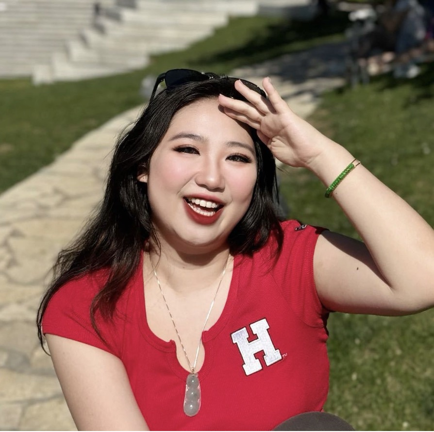

镜头塔罗Camera Tarot通过摄像头识别手势，攥拳抽出塔罗牌Gesture-based tarot draw through camera interaction
摄像头CAMERA手势界面GESTURE UI影像管线MEDIA PIPE
面向有潜力、却暂时卡住的孩子：先读懂他的状态和内驱力，再陪他用 AI 做出真实作品。你不必先想清楚孩子该学什么工具，只需要判断——他是否需要一位既懂心理、又懂 AI 的导师。For capable students who feel stuck: Becky reads the child's state and drive first, then helps turn it into real AI products. You don't need to decide which tools they should learn — only whether they need a mentor who understands both psychology and AI.
抗拒、躺平、焦虑、没有方向Resistance, anxiety, no direction
心理理解 + AI 实战 + 作品规划Psychology + AI building + portfolio path
真实应用、路演、表达与申请故事Real app, demo, voice and application story
孩子的未来会和 AI 并存。谁能在小的时候找到自己的内驱力，找到自己的 AI 掌控力，谁就更容易从变化里脱颖而出。Children will grow alongside AI. Those who find inner drive early and learn to command AI will stand out in this shift.
看适合人群、两条辅导线、全年路径、孩子能带走什么。See fit, the two tracks, yearly route and takeaways.
进入家庭页Go to family page → 导师可信度BECKY_PROOF看教育心理、临床、AI 创业、公益与国际活动现场。See psychology training, clinical work, AI building and public work.
查看 Becky 档案View Becky dossier → 真实作品WORKS_LIVE打开真实可交互产品，看 AI 创造力如何变成可展示成果。Open real interactive products and see how AI creativity becomes visible work.
打开作品墙Open works →AIPsychLab 孩子学到的是未来掌握力，发掘内驱力，学会用AI，成为未来的先驱者。At AIPsychLab, children learn future agency, discover inner drive, learn how to use AI and become pioneers of the future.
孩子为什么不动、为什么抗拒、为什么焦虑。Why the child resists, stalls or feels anxious.
把兴趣、性格和优势翻译成项目题目。Translate interest and strengths into project topics.
从提示词到 Claude Code，做出可访问应用。From prompting to Claude Code and deployable apps.
作品集、Demo Day、表达、自信和申请故事。Portfolio, Demo Day, voice, confidence and story.

心理 × AI × 哈佛视角，集中在同一个人身上。Psychology × AI × Harvard — in one person.
先读左边的问题，点击这一行，再看孩子能带走什么。Read the worry first, then click the row to reveal what the child takes away.
孩子第一次完整体验：我有一个想法，我把它做出来了，真的有人在用。这个闭环一旦打通，他做什么都不一样了——而且这件事，考试考不出，谁也拿不走。The first time the child runs the full loop — I had an idea, I built it, and real people use it — everything changes. No exam can measure it, no one can take it away.
这里不放包装话术，只放可以打开、可以体验、可以被看见的作品。No packaging language here. Only work that can be opened, experienced and seen.
心理学 + AI 陪伴方向，探索情绪支持、日常陪伴与自我觉察的产品形态。A psychology + AI companion direction exploring emotional support and self-awareness.
进入作品墙，查看真实产品、学生项目与 Demo Day 展示。Enter the work wall for live products, student projects and Demo Day showcases.
我们会先判断孩子是否适合进入 Becky 的 1v1 深度陪跑。We first decide whether the student is a fit for Becky's deep 1-on-1 mentorship.
预约评估Book Assessment →